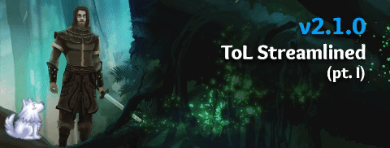

Xblade, here. While balance is subjective, and the patch dust is settling, tons of people are starting to understand the patch, why we did it, and the positive impact it had (Yes, there were some balance disagreements, but there are always those – this is not like it’s our last patch ;D).
For those that don’t understand the new new quality-of-life additions that was the biggest reason for the streamlined patch, let me explain more. Tons of stuff here is in bold to skim this blog (it’s not me yelling  ).
).
Simplified or Streamlined?

We initially made the mistake of calling the patch ‘simplified’ >> then immediately rebranded it as ‘streamlined’ for what it truly is.
But–you simplified things!
What was truly simplified beyond the Alchemist? While the old Alchemist had more fun buttons to click, most would agree that this was pretty necessary. If additional button options are more important than your own wit, you may be playing the wrong game ;D
…But I digress, we’re talking about simplified vs streamlined. Simplified implies that we watered down the game, while streamline involves making the game more intuitive for not only new players, but everyone.
Ok, well, what did you streamline?
- We wanted to make the game more intuitive.
- We wanted to add a consistent glossary of terms.
- We wanted to remove unintended tediousness.
- We wanted to reduce RNG (Random factors).
- We wanted new players to be onboarded faster.
- We wanted new patches to be easier/faster to understand.
- We wanted less gamethrowing from new and returning players.
But you aren’t listening to the vets!
But we are! What is the #1 concern from the average veteran player? Gamethrowing. This is a game where you HAVE to rely on your teammates or it’s not fun. It’s a game where your adversaries need to know what they’re doing, or it’s not challenging.
You’re not playing with 5 total people, but 16 people. Every single one of them has to stay inside the game, know what they are doing, and not gamethrow for this to be fun for veterans. By the time you’re a veteran, you don’t really care about gp anymore – you just want a quality game. This means your enemies you even want to be challenging.
THIS MEANS:
-
New players play with veterans. Therefore, new players that know what they are doing = better allies, more-challenging adversaries, less gamethrowing all-around.
-
Vets always wanted their own queue, right? Remember when Casual Mode (RIP) was public? Yeaaaa… about that. We need a constant flow of new players in order for us to even think about something like this or it’ll just be another ‘casual mode’ with a 2-hour queue. New players = potential for future goodies.
-
Don’t forget about returning players. Before the streamlined patch, it was incredibly intimidating to play the game after you haven’t played for ages. We’ve already seen tons of veteran players make their return and find themselves settling in. This patch was tough to learn from an old player, but imagine future patches. Take a break, come back, np.
-
Continuous updates. New players don’t care about updates since they don’t even know the game yet, but veterans do. It can be easy to forget we’re an indie game, and anyone can Google Steam’s share. Then taxes. Then split with the team. Then reinvestment back into the game: In the end, we don’t actually make much. We don’t focus on our microtransactions and don’t want to. New players = devs can continue being full-time. Did you know the only actual programmers are me + Ellie?* If we can’t afford servers/rent, that would be bad. New players = GOOD for EVERYONE!
So, the Yogscast Jingle Jam Charity Bundle… Surprise!
While we were under NDA when we released the streamlined patch, you can probably further understand why it had to be done. The NDA made it awkward that we couldn’t say anything and the average person still has no idea that our population dramatically boosted with new players because of this bundle. Literally about doubled in active population, not even including the +population that activated their key but are yet to play!
This is one of those patches that “you want it, even if you don’t know it yet”.
We have already seen a decline in gamethrowing reports, a decline in “this game’s just too hard”, reviews that complain the game is tough (the major new player complaint is not-forgiving players for newb mistakes), queue times have lowered, and overall has been healthy for the game.
Now, imagine that we donated up to 250,000 charity keys to that bundle and we didn’t have this patch. The first thing on your mind, GO!
Gamethrowing new players!
…this may still be the case  BUT! Certainly not as much as you imagined. Yogs has already raised over $5 million. Even at 5 mil,
BUT! Certainly not as much as you imagined. Yogs has already raised over $5 million. Even at 5 mil, $5mil / $35 = 142,857 new copies have been given away. There are tons over the holidays to play, so there’s a good chance many of these will be activated in January. Whoa!
Unintended Tediousness? Less RNG?
Without looking it up, name pre-patch every combination of who can occupy, who is occupy immune, and who can override this, even though you’re “immune”? It hurts my brain to even think about it.
These were not intended to be confusing: Just over time, with our changes, this just so happened to end up this way. At launch, you wouldn’t find this confusing mess. It’s not there for challenge - it never was! It was simply “leftover” to add another layer of confusion. Not even the devs remember this, let alone our most senior vets.
Most people just sort of guess or assume (and not in a fun way). The streamlined patch lowers RNG since there’s less of this confusing mess.
Then inconsistency everywhere! Imagine if a card game like Hearthstone had 10 expansions with 0 consistent terms – all named something super unique, 99% doing the same thing but 1% doing something slightly different. While it’s cool that abilities are unique, it limits us severely – things get confusing for new players AND vets (even devs). This is not what anyone wants.
CONSISTENCY = SECURING THRONE’S FUTURE
While the names are certainly COOL and it looks unique, and may even be viable in the first set (pretend those are vanilla). However, what about the future? What about 10 expansions later? What about 5 years later? Imagine memorizing not “Taunt” or “Deathrattle”, but if all of these consistencies didn’t exist. Imagine patch notes, how long it would take to adapt. Imagine that a simple mechanic like “Taunt” was called something different each time. Consistency ensures a future for Throne.
Securing The Future
- Wanted a new class? It wouldn’t happen before the streamlined patch. We reached a maximum complexity.
- Want a new mechanic? We already have too many unique ones. It wouldn’t have ever happened. However, now, it’s possible in the future.
- Want us to explode so we can upgrade our art? Our animations? Our armor and weapons? The environment? It wouldn’t happen because new players and returning veterans are intimidated. New players keep us alive and raise the budget so we have the capability to do these things.
- Want to bring your friend aboard? Tons of my friends won’t even play the game, even though I made it, simply because they’re intimidated by the complexity (and my buds play D&D! That’s so hard to learn, imo! So much to micromanage). With this patch, you can tell them we finally became more intuitive and easier to understand. While a select few abilities may have been watered down, the majority still remains the same.
TL;DR:
Long story short, the streamlined patch = new (and returning) players = benefits both veterans AND players = does EVERYONE a favor + secures the future of the game.
EDIT: Toss around this short link to this post @ https://toli.es/streamlined